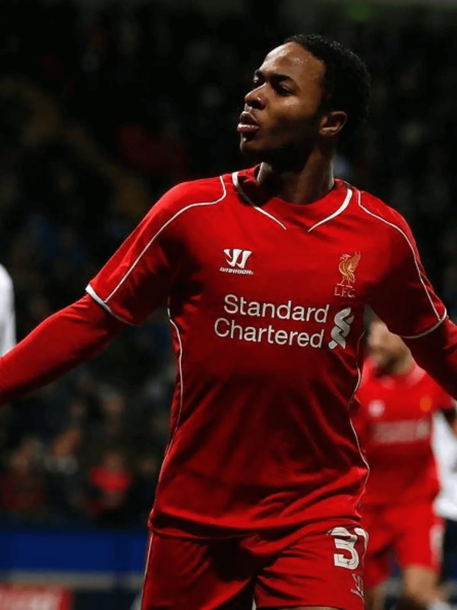
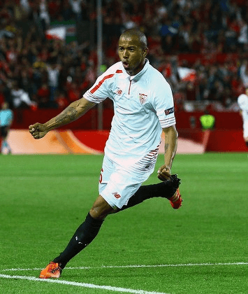

New Balance Gallery
Você está entrando na primeira sala da galeria.
Sala 1: Origens no Futebol
Explore os primeiros clubes patrocinados pela New Balance e suas camisas históricas que marcaram o início da trajetória da marca no futebol mundial.

Liverpool FC
2013-2014. Primeira parceria da New Balance no futebol europeu.
FC Porto
2015-2016. Uma das primeiras camisas emblemáticas da marca.

Sevilla FC
2015-2016. Primeira identidade visual da NB no futebol espanhol.